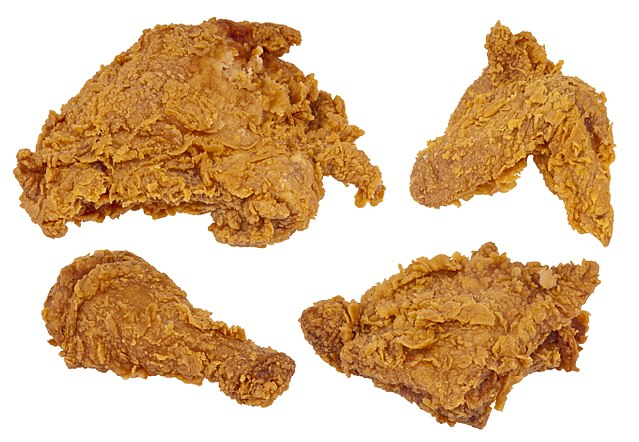

Fried Chicken

Crispy and crunchy just like it should be!
This fried check is a great comfort food that will have you keep reaching for more!
With its crispy outside and juicy chicken perfection on the inside you wont be able to top!
Ingredients
4 cups all-purpose flour, divided
2 tablespoons garlic salt
3 teaspoons pepper, divided
2-1/2 teaspoons poultry seasoning
2 broiler/fryer chickens (3-1/2 to 4 pounds each), cut up
Steps
In a large shallow dish, combine 2-2/3 cups flour, garlic salt, paprika, 2-1/2 teaspoons pepper and poultry seasoning
In another shallow dish, beat eggs and 1-1/2 cups water; add 1 teaspoon salt and the remaining 1-1/3 cups flour and 1/2 teaspoon pepper.
Dip chicken in egg mixture, then place in flour mixture, a few pieces at a time. Turn to coat.
In a deep-fat fryer, heat oil to 375°.
Fry chicken, several pieces at a time, until chicken is golden brown and juices run clear, 7-8 minutes on each side.
Drain on paper towels.